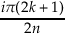
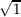

By expanding the polyomial we get
| (cos θ + i sin θ)3 | = cos 3θ- 3 cos θ sin 2θ + i(3 cos 2θ sin θ- sin 3θ), |
| (cos θ + i sin θ)3 | = cos(3θ) + i sin(3θ). |
Then cos(3θ) + i sin(3θ) = cos 3θ- 3 cos θ sin 2θ + i(3 cos 2θ sin θ- sin 3θ), and equating their real and imaginary parts leaves us the following identities:
| cos(3θ) | = cos 3θ- 3 cos θ sin 2θ, | ||
| sin(3θ) | = 3 cos 2θ sin θ- sin 3θ. |
Let ω be an n-th root of unity not equal to 1. Then ωn - 1 = 0. Then
| x2n | = -1. | ||||||
| 2n log x | = iπ(2k + 1)∀k ∈ Z. | * | |||||
| log x | = ∀k ∈ Z. | ||||||
| x | = eiπ(2k+1)∕2n∀k ∈ Z. |
Since x = eiπ(2k+1)∕2n is a solution, (x-eiπ(2k+1)∕2n) is a factor. To find all factors, we multiply this factor by its conjugate.
Then
Let z be a root of unity. Then z2 = 1. Then |z| =  = 1. A complex number on the unit circle that is not a root of unity is z4 - 2z3 - 2z + 1.
We want the set of points such that
Then our set is {z = x + iy∣y = x-}.
|z- 2 + i|≤ 1 is closed and bounded.
|2z + 3| < 4 is bounded, and open and connected, so it is a domain.
Im z > 1 is open and connected, so it is a domain.
Im z = 1 is closed and connected.
0 ≤ Arg z ≤ with z≠0 is closed and connected.